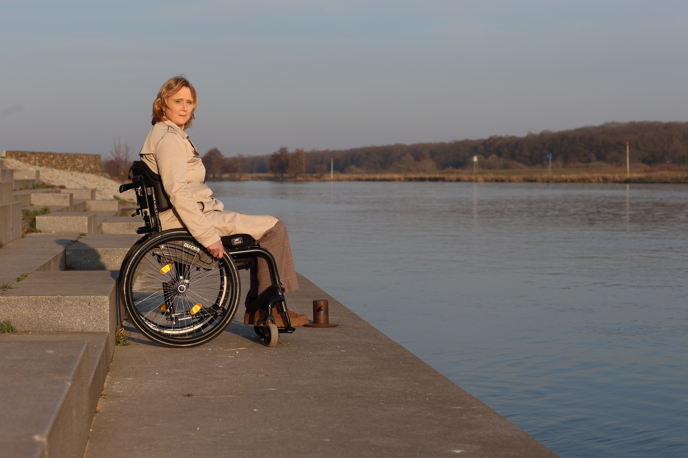

Je leven is veranderd. Niet alleen fysiek, maar ook mentaal en emotioneel. Als ervaringsdeskundige en psychologe i.o. help ik je stap voor stap een nieuw evenwicht te vinden. Omdat ik weet hoe het voelt.

Leven met een chronische aandoening raakt je hele bestaan. Of het nu MS, fibromyalgie, artrose, ME/CVS of een andere aandoening is — het gaat om veel meer dan alleen fysieke symptomen.
Er is de vermoeidheid die nooit helemaal weggaat. De onzekerheid over morgen. De frustratie dat dingen niet meer vanzelfsprekend zijn. En ja, ook de somberheid en angst die erbij kunnen komen.
Veel mensen die bij mij komen zeggen: ik kan de pijn wel aan, maar ik weet niet hoe ik ermee moet leven. Dat is precies waar begeleiding verschil kan maken.
De manier waarop je denkt over je ziekte beïnvloedt hoe je je voelt en hoe je ermee omgaat. Dat is geen kwestie van positief denken — het is hoe je zenuwstelsel werkt. En het is iets waar je aan kunt werken.
Ik begrijp chronische ziekte niet alleen professioneel, maar ook persoonlijk. Ik leef zelf met MS. Ik ken de dagen waarop je lichaam niet meewerkt, de onzekerheid en de vragen die erbij horen.
Tegelijkertijd was ik 25 jaar fysiotherapeut. Ik begrijp niet alleen de mentale kant, maar ook hoe je lichaam en geest op elkaar inwerken. Die combinatie maakt mijn begeleiding anders.
Samen kijken we naar drie dingen:
Ik werk onder andere met ACT-therapie, cognitieve therapie, polyvagaaltherapie en lifestyle-aanpassingen. Welke methode het beste past, bepalen we samen. Speciaal voor mensen met MS bied ik ook online MS coaching aan, zodat je overal in Nederland terecht kunt.
Het gaat niet om genezen. Het gaat om leven — werkelijk leven, niet alleen overleven. Meer goede dagen. Het gevoel dat je weer regie hebt, ook als je lichaam grenzen stelt.
Leven met een chronische aandoening vraagt veel van je. Herken je jezelf hieronder?
MS, fibromyalgie, artrose, ME/CVS, diabetes of een andere aandoening. De specifieke diagnose is minder belangrijk dan jouw ervaring ermee.
Je bent verdrietig, boos of bang. Je voelt je eenzaam in wat je doormaakt. De emotionele last wordt steeds groter.
Een psycholoog zonder ervaring met chronische ziekte begrijpt je niet helemaal. Je zoekt iemand die weet hoe het voelt.
Je bent klaar om anders te leren omgaan met je situatie. Niet afwachten, maar actief werken aan wat je wél kunt.
Niet alleen professioneel, maar ook persoonlijk. Iemand die de goede en slechte dagen kent vanuit eigen ervaring.
Sessies in Grubbenvorst (regio Venlo, Horst, Sevenum, Blerick) of online via videoconsult, waar je ook woont.
Lichaam en geest werken samen. Hoe je denkt en voelt beïnvloedt je symptomen. Stress en angst kunnen klachten versterken. Met bewezen methoden kun je leren je zenuwstelsel rustiger te maken, waardoor je je beter kunt voelen in je dagelijks leven.
Ja, ik leef zelf met MS. Dat betekent dat ik niet alleen vanuit theorie werk, maar ook vanuit persoonlijke ervaring weet hoe het is om dagelijks met een chronische aandoening om te gaan. Die combinatie met 25 jaar fysiotherapie-ervaring maakt mijn aanpak uniek.
Ik werk onder andere met ACT-therapie (acceptatie en commitment), cognitieve therapie, polyvagaaltherapie en lifestyle-aanpassingen. Welke methode het beste past, bepalen we samen op basis van jouw situatie en wensen.
Dat verschilt per persoon. Sommigen ervaren al na een paar sessies meer rust en duidelijkheid. Een gemiddeld traject duurt 8 tot 12 sessies. Na het gratis kennismakingsgesprek maken we samen een realistisch plan.
Begin met een gratis kennismakingsgesprek. Vrijblijvend en op jouw tempo.
Neem contact op →Of bel direct: 06 425 590 22 · info@sabinevanderelsen.nl